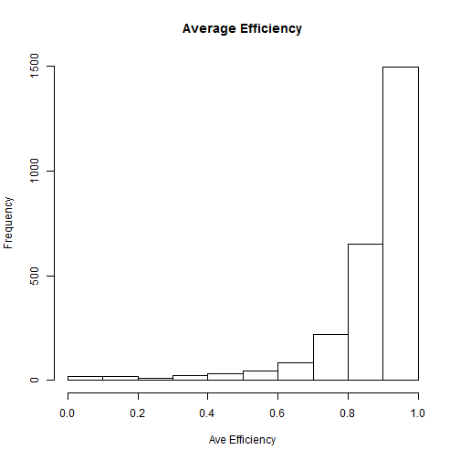

The Shiny app allows the user to view and interactively compare the distribution of the average efficiency based on the pilot's total missions to see if there is any correlation.

Below is the result of some executable R code which provides a summary of one of the datasets. The app seems to indicate that there is no substantial difference in the distribution based on lifetime missions. All pilots appear to want efficiency to be in the 80 percent range.
## X0.83
## Min. :0.000
## 1st Qu.:0.850
## Median :0.920
## Mean :0.878
## 3rd Qu.:0.970
## Max. :1.000